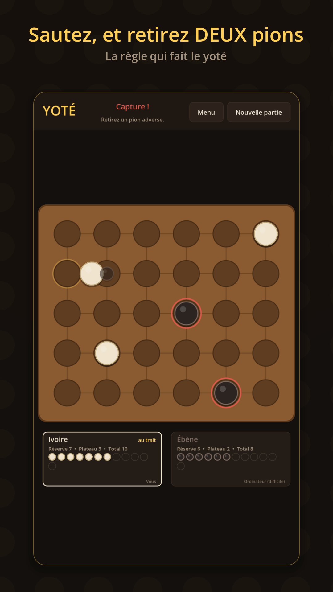
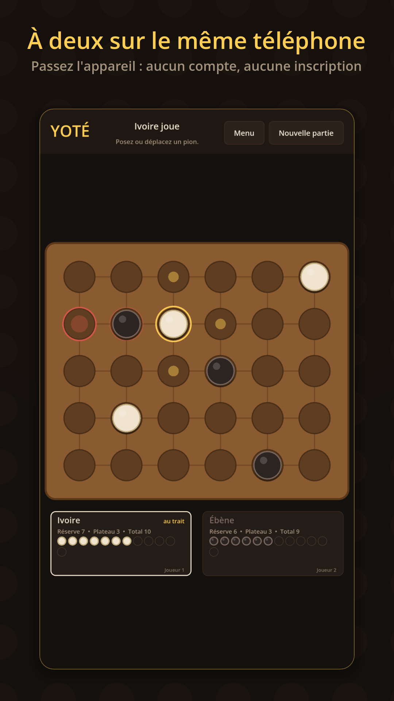
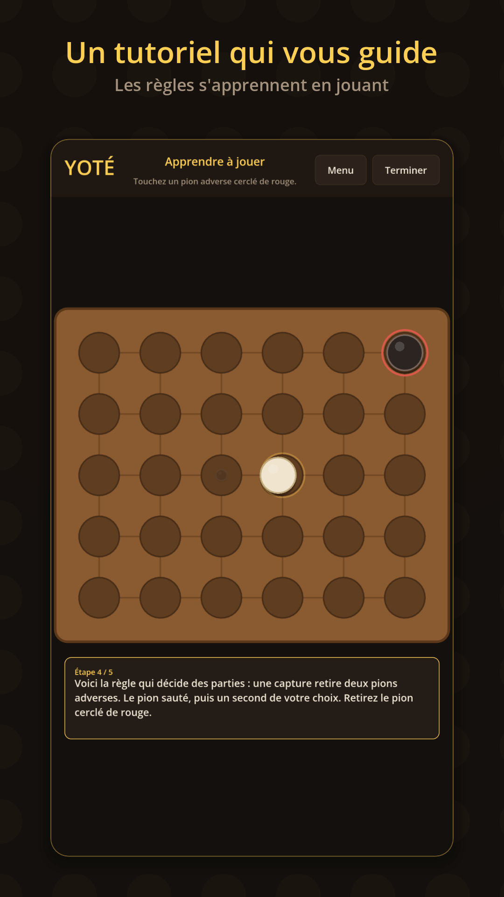

Yoté
Une capture retire deux pions. Le jeu de
plateau traditionnel du Sénégal, à deux joueurs sur le même téléphone ou contre
l'ordinateur.
Télécharger pour Android
Version 1.0.1 · 166 Mo · Android 10 ou plus
récent · gratuit, sans achat intégré ·
autres versions
Installer
- Touchez le bouton ci-dessus : le fichier
yote.apk se
télécharge.
- Ouvrez-le. Android demandera l'autorisation d'installer une application
venant de cette source — c'est normal hors du Play Store : acceptez pour votre
navigateur.
- Installez, et jouez. Aucun compte, aucune inscription.
Vous avez déjà le jeu ? Installez simplement la nouvelle version par-dessus :
vos parties et vos statistiques sont conservées.
Le jeu en vidéo
À quoi cela ressemble



Ce que contient le jeu
- Deux joueurs sur le même téléphone, ou contre l'ordinateur
- Quatre niveaux : facile, moyen, difficile, expert
- Un tutoriel guidé en cinq étapes, sur le vrai plateau
- Statistiques, séries de victoires et huit défis
- Reprise automatique de la partie interrompue
- Se joue hors ligne ; une publicité s'affiche entre certaines parties,
jamais pendant
Confidentialité
Contact
Adama Traoré — adama.traore0802@gmail.com
Un problème à l'installation, une
règle qui vous semble mal appliquée, une idée ? Écrivez : chaque retour sert à
la version suivante.